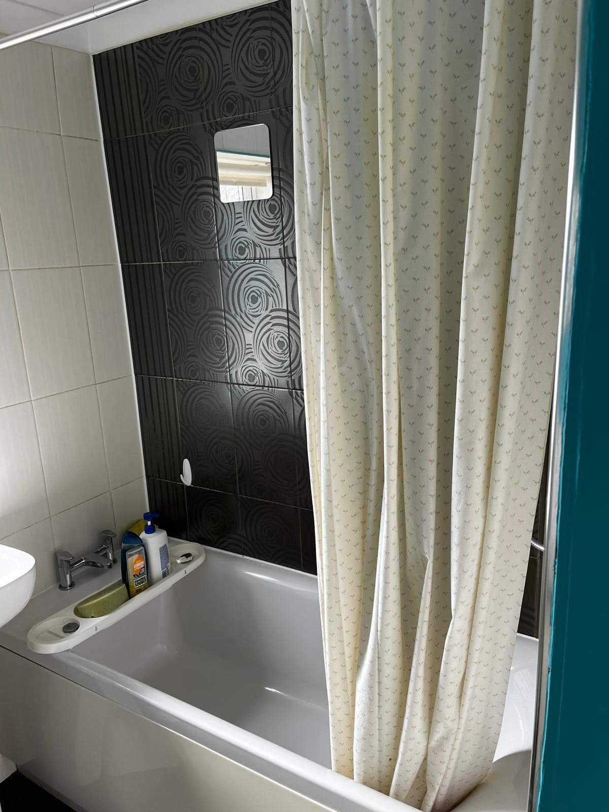
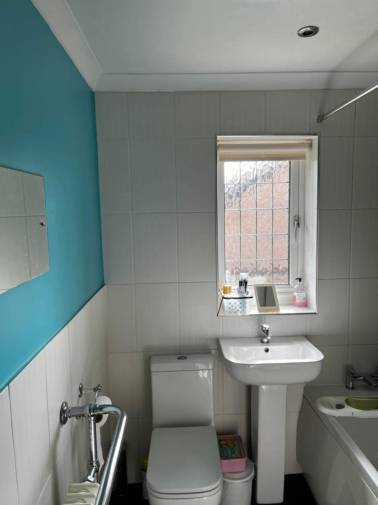
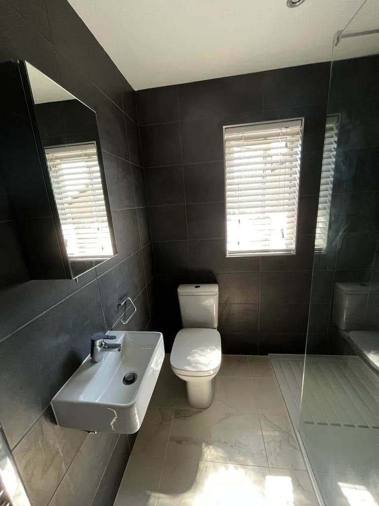
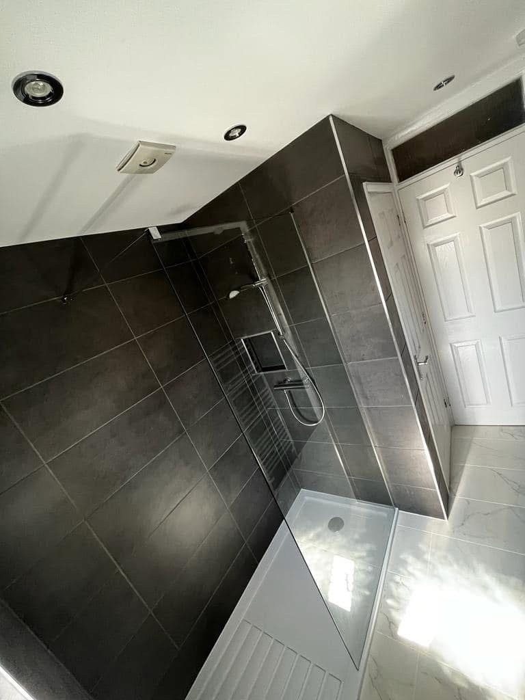

Insurance Reinstatement
A full bathroom rebuild following a water leak behind the existing shower. Stripped out, addressed at source, and finished to a modern, premium standard.
The brief
Water leak. Full strip-out. Modern rebuild.
A leak had developed behind the existing shower wall, causing water damage to the surrounding tiling, plasterwork and flooring. The insurer instructed ARIA to carry out a full reinstatement at the property in Bedfordshire and bring the room back to a finished standard.
Our team stripped out the existing bathroom in full, addressed the source of the leak, and rebuilt the room from scratch: porcelain wall and floor tiling throughout, a walk-in shower with glass screen replacing the original bath, modern wall-hung sanitaryware, and new mechanical ventilation.
The work




The result
Modern, watertight, finished to spec.
A complete reinstatement that doesn't look like one. The new bathroom is finished to a premium standard, with the cause of the leak properly addressed rather than tiled over.
Delivered through our JSPER-managed process: scoped, scheduled, evidenced and signed off with a full audit trail for the insurer.
Reinstatement claims?
From emergency response through to full sign-off, ARIA delivers insurance reinstatement work with the transparency, evidence and finish standard your supply chain expects.
Get in touch